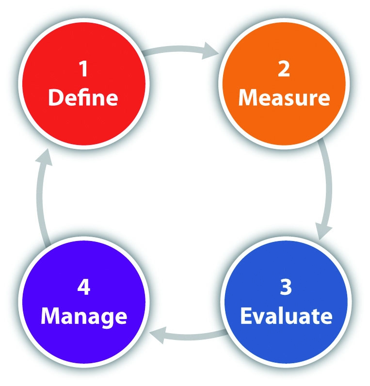
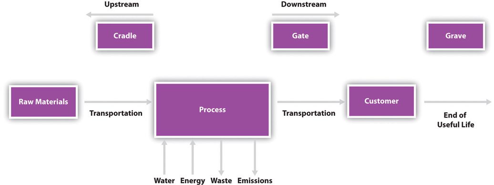

AccountabilityThe obligation that an organization takes on to ensure that it meets its responsibilities. is a concept in corporate governanceThe set of processes, rules, policies, laws, and institutions by which businesses are directed, administered, or controlled. that is the acknowledgement of responsibility by an organization for actions, decisions, products, and policies that it undertakes.
A customer of a business expects that a product manufactured and sold by a business has been designed, tested, and produced so that it is safe to use. An investor in a business expects that the managers of the company are working to maximize shareholder return and to not be wasteful of corporate resources. The federal government expects that a business pays its taxes properly and promptly. These are all examples of the expectations that stakeholdersAny person, group, or organization affected by an organization’s actions. For businesses, it can include owners and investors, employees, customers, suppliers, and all members of society affected by the organization. have of businesses to act in a responsible manner.
Rising stakeholder expectations are motivating organizations to consider the impacts of their actions in a broad, transparent, and systematic manner. Businesses are a major actor in modern society, and stakeholders expect that businesses be a positive contributor to societal well-being. Stakeholders want companies to be more than purveyors of a product or a service; they expect them to fulfill a more positive societal role.
Consumers are showing increasing concern for the environmental and societal impacts of the products and services they purchase.BBMG, Conscious Consumers Are Changing the Rules of Marketing. Are You Ready?, http://www.bbmg.com/pdfs/BBMG_Conscious_Consumer_White_Paper.pdf. Many investors are starting to use a company’s performance in sustainability as an indicator of business value and of management strength. A recent example of increased investor sustainability accountability expectations is when twenty-four institutional investors wrote to thirty of the world’s largest stock exchanges asking that they address inadequate sustainability reportingThe collection, analysis, and reporting of social, economic, and ecological performance indicators by an organization. by companies.United Nations Global Compact, “Investors Representing US$1.6 Trillion Call for Sustainability Disclosure from Listed Companies,” news release, February 2011, http://www.unglobalcompact.org/news/103-02-22-2011.
There are numerous examples of companies’ social or environmental actions affecting consumer purchasing behavior both positively and negatively. In March 2011, Bob Parsons, the CEO of GoDaddy, the world’s largest provider of web hosting and domain name registrations, posted a video of him shooting an elephant in Zimbabwe, Africa, on the Internet. The video showed the elephant being killed and local villagers stripping flesh from the carcass of the dead elephant to a score of rock band AC/DC’s “Hells Bells.” While Parsons claimed the elephant was destroying the villagers’ crops and that he was actually providing a service to the local African community, his actions—and specifically the callous way that he documented his actions—spurred outrage from customers with many cancelling their accounts as a result. This is an example of how the social conduct of the CEO of a company carried over to the brand image of the company and resulted in a loss in revenue.
Elephant Hunt Video
Follow the link to view the video:
“Ethical Jewelry”
In June 2011, Jewelers’ Circular Keystone (JCK), the jewelry industry’s leading trade publication, reported on the results of a survey that found 78 percent of consumers said they cared about sustainability and 60 percent of consumers said they were willing to pay a premium for “ethical jewelry.” Rebecca Foerster, the US vice president at Rio Tinto Diamonds, stated, “This generation that is up and coming is more concerned about where the products they are buying come from, and they are becoming activists about it.”Rob Bates, “JCK Las Vegas: Consumers Want Sustainable Products,” JCK Magazine, June 4, 2011, http://www.jckonline.com/2011/06/04/jck-las-vegas-consumers-want-sustainable-products. Consumer demand for ethical jewelry is increasing sales for products, such as recycled gold and conflict-free-certified diamonds.
“Conflict” diamonds, also known as “blood” diamonds, are defined by the United Nations as those that originate from areas controlled by forces opposed to legitimate and internationally recognized governments. Angola and Sierra Leone in Africa are examples of two countries that are sources of conflict diamonds. Diamonds have often been used by rebel forces in these countries to finance arms purchases and other illegal activities. Conflict-free diamonds do not look any different from conflict diamonds but have proof of origination showing that were produced in more peaceful regions of the world.
Ethical jewelry is an example of how consumer concern for sustainable products is transforming the offerings from the jewelry industry. By customers “voting” with their purchases they are supporting conflict-free diamonds, which helps reduce a source of funding available to rebel forces with the expectation that this will either shorten wars or prevent their occurrence.
Blood diamond impact.
Organizations also need to prepare for anticipated regulation and new government measures related to environmental and social impact. Governments continue to pass legislation to change or end business practices that are harmful to the environment, consumers, or employees. Governments also provide programs and incentives to support voluntary efforts by business to improve their impacts on the community and the environment. The role of government in driving sustainability in businesses is discussed in detail in Chapter 3 "Government, Public Policy, and Sustainable Business".
The response by many businesses has been an increase in transparencyRefers to openness, communication, and accountability. For sustainable businesses, it involves ready access to important information about an organization’s economic, ecological, and social impacts. on the reporting of the economic, ecological, and social impacts of their activities. This allows for credibility and operational integrity in a company’s business activities. Businesses need to clearly communicate the positive and measurable impact that they have on all the stakeholders impacted by their operations.
Triple bottom line (TBL) reporting, also known as sustainability reporting, has emerged as the primary vehicle to communicate this information from businesses to stakeholders. This type of reporting goes beyond profit (financial) information and discloses the planet (environmental) and people (social) impact of a business. Sustainability reporting is a tool to communicate to society the actions a company is undertaking to fulfill its broad responsibilities to society.
A goal of sustainability reporting at the society level is to identify uneconomic growth. Uneconomic growthA concept from human welfare economics and is economic growth that results in a decline in the quality of life. is a concept from human welfare economics and is economic growth that results in a decline in the quality of life. Only measuring financial activity would not identify uneconomic growth, but with the inclusion of social and environmental performance, stakeholders have a better indication of the quality of economic activity.
Quite often sustainability reporting is driven not only by external stakeholder forces but by the internal core values of the companies. Some companies are founded by social entrepreneurs who want to incorporate aspects of social change or environmental stewardship into their business operations. Sustainability reporting provides a way of documenting efforts by these organizations and communicating that to customers and other stakeholders. Some companies hope that by publicly disclosing successes and failures related to their sustainability initiatives that they can provide lessons learned to help other companies become more sustainable.
Businesses are facing new risks that need to be managed and this is leading them to actively manage their sustainability profile. Resource depletion, increased toxicity, and climate change are all examples of risks that can decrease profitability through either increased cost or decreased revenue. Sustainability reporting can help a company measure and quantify its economic risk associated with different environmental or social threats that may be overlooked in traditional financial reporting. At the same time, all of these factors provide for new business opportunities, and the companies that can successfully manage their businesses from a sustainability perspective can build competitive advantage, mitigate risk, and capitalize on innovation.
Currently, larger-size companies, such as Ford, are leading efforts in sustainability reporting as they have greater financial resources available to cover the additional costs of sustainability reporting. It can be challenging for smaller companies to replicate the efforts of the largest and most resourceful companies. These larger company efforts in sustainability reporting, which are the focus of this chapter, provide examples of the types of information that could be useful for businesses of all sizes to report on and provide details about processes that business of all sizes can establish in sustainability reporting.
Sustainability Reporting at Ford
Ford’s “12th Annual Sustainability Report” provides a performance summary with measures that are important to Ford in its pursuit of sustainability. Ford chose to publish their report as an interactive website that allowed stakeholders to quickly jump to the areas of sustainability that were of interest to them.

Source: “Sustainability Report 2010–2011,” Ford Company, http://corporate.ford.com/microsites/sustainability-report-2010-11/overview-performance.
Highlights from the Twelfth Annual Sustainability Report
To read Ford’s complete sustainability report, go to http://corporate.ford.com/microsites/sustainability-report-2010-11/default.
Rocky Mountain Flatbread
Rocky Mountain Flatbread is owned by Dominic and Suzanne Fielden, who “care deeply about…community, food and celebration.” The Canadian-based business operates two carbon neutral restaurants and a pizza wholesale business, which distributes to over two hundred health and grocery stores throughout western Canada. Their company exists to generate a profit but also to create positive societal change. They engage in a wide variety of sustainability activities, including partnering with local schools on healthy cooking classes, using Canadian-grown ingredients, and fueling their clay oven with salvage wood or fallen timber. They have taken a simplified approach to sustainability reporting and have calculated a carbon footprint and keep track of some key metrics. For example, 90 percent of their food ingredients are produced locally, and they compost 100 percent of their food.American Institute of CPAs, SMEs Set their Sights on Sustainability: Case Studies of Small and Medium-Sized Enterprises (SMEs) from the UK, US and Canada, http://www.aicpa.org/interestareas/businessindustryandgovernment/resources/sustainability/downloadabledocuments/sustainability_case_studies_final%20pdf.pdf. They have found the right balance of tracking information to help inform progress on sustainability goals without hindering business operations. Public reporting of their sustainability efforts includes videos on YouTube (http://www.youtube.com/watch?v=8PSIPWavu0o) and sustainabilitytv.com, Facebook, and a page on their website called “Going Green.”
How do an organization and its stakeholders know how “sustainable” it is? This is not an easy question to answer. As all human activity have economic, social, and ecological impact, it is very difficult to determine whether the sum of the total impact of all activities of a company makes it “sustainable” or “unsustainable.” A more useful approach is to consider an organization’s actions on a continuum with a goal of continuous improvementA management philosophy of ongoing effort in improving an organization’s products, services, or processes. Often improvement is based on many incremental changes as opposed to radical overhaul. in decreasing its negative overall societal impact and improving its positive overall societal impact. Any change in any organization can be challenging to implement, and viewing business operations from a triple bottom line perspective—especially in organizations that typically have been only financially focused—can be extremely challenging. Progressive and small changes when approaching sustainability often will be a more effective strategy than implementing more widespread changes.
There is an axiom in business that “you can only manage what you measure.” Measurement is at the core of performance-based managementA systematic approach to improving the effectiveness of an organization through an ongoing process of measurement, collection, review, analysis, action, and communication.. This statement is true whether the business is a small sole proprietorship or a large multinational company. In order for any organization to understand its current status and progress on its business activities, it is essential that it has clearly defined business metricsA set of measurements that quantify results. In a business context, they typically quantify performance toward specific business goals. that can be collected, analyzed, evaluated, and acted upon.
Businesses have traditionally focused on their performance on financial and accounting information. It is only in recent years that the business community has shifted to additional metrics—in terms of environmental and societal impact—to assess their business performance. Over the past decade, sustainability reporting has been increasingly adopted by corporations worldwide. In 2008, nearly 80 percent of the largest 250 companies worldwide issued some form of reporting that incorporated environmental or societal impact; this is up over 50 percent from 2005.KPMG, KPMG International Survey of Corporate Responsibility Reporting 2008, http://www.kpmg.com/EU/en/Documents/KPMG_International_survey_Corporate_responsibility_Survey_Reporting_2008.pdf.
Sustainability reporting continues to become more mainstream in the corporate world. In June 2011, global consulting and accounting firm Deloitte expanded its sustainability service offerings by acquiring DOMANI Sustainability Consulting, LLC, and ClearCarbon Consulting, Inc. Large accounting firms are recognizing the business opportunity to shift from single bottom line accounting to triple bottom line accounting.
Chris Park, principal at Deloitte Consulting, LLP, and national leader of Deloitte’s sustainability services group, said Deloitte’s “focus is on working with clients to further embed sustainability into everything they do, helping companies drive growth and innovation, mitigate risk, reduce cost and improve brand—using energy, water, resources and emissions as levers for creating value.”“Acquisitions, Hirings Expand Deloitte’s Sustainability Service Offerings,” Inaudit.com, http://inaudit.com/consulting/acquisitions-hirings-expand-deloittes-sustainability-service-offerings-6705.
Sustainability reporting is for the most part a voluntary activity with two main goals currently:
Sustainability reporting typically focuses on comparing performance in the current year to the previous year and comparing it to specific goals and targets. It can also include a longer-term focus and comparisons to other companies in similar industries and in the same geographic areas.
Sustainability reporting is also referred to as “triple bottom line” reporting, meaning that it takes into account not only the financial bottom line of a company but also the environmental and social “bottom lines” for a company. Sustainability reporting reflects the interrelated progress of a company in the three areas—also referred to as people, planet, and profit.
For businesses to understand and improve corporate sustainability performance, organizations need accurate carbonMeasurement of the greenhouse gas (GHG) emissions from an organization’s business activities. Quite often linked to its energy usage., energy, toxics, waste, and other sustainability dataQuantitative information derived from the business activity of an organization that is used to create social or environmental metrics. Examples include annual water usage, records of worker harassment complaints, sales revenue, and employee wages and benefits.. While traditional business financial statements—such as balance sheets and net income statements—may help a business determine if it is financially sustainableA company is generating positive cash flow or is profitable, meaning that its revenues are expected to exceed its costs. This allows the company to sustain business operations with the same or greater assets and resources. (an important part of business sustainability), they are alone inadequate in measuring a company’s environmental and social progress.
Just as there are accounting standards, such as generally acceptable accounting principles (GAAP)A standard framework of guidelines for financial accounting., to provide organizations with a common “language” of reporting financial information, there are also standards and processes that have been developed for organizations to measure and communicate their position and progress on sustainability.
One of the most important aspects of sustainability reporting is the communication of the information so that it can be evaluated by stakeholders. For most businesses, the most visible form of sustainability information communication is in their annual corporate sustainability report. This has become an increasingly common document released by major companies and is typically featured on their websites. Many companies will have a section of their website specifically dedicated to highlighting their initiatives and outcomes relating to sustainability. Sustainability information can be included on consumer packaging or other marketing pieces to help brand the sustainability efforts of the company and assist consumer choice.
Coca-Cola’s Sustainability Efforts
Coca-Cola Enterprises’ 2009/2010 Sustainability Review report provides an example of an annual sustainability report. It discusses goals and performance for areas including beverage benefits, active healthy living, community, energy efficiency and climate protection, sustainable packaging, water stewardship, and workplace. These areas encompass economic, ecological, and social performance in a way that fits and is meaningful to Coca-Cola’s business and strategy. The report is available online at http://www.thecoca-colacompany.com/citizenship.
While metrics are important, quantitative information is only one aspect of sustainability reporting; what is also important is qualitative information that provides context for a company’s sustainability efforts and discussion of how sustainability integrates into an organization’s short-term and long-term mission and business activities.
Sustainability reporting can be challenging. Sustainability efforts can be difficult for organizations for reasons including
Information systems, labor, and other organizational resources must be devoted to measuring and analyzing sustainability information. In addition, sustainability is a complex topic and reporting on specific economic, ecological, and social metrics that are quantifiable may not be sufficient to give a full picture of a company’s “true” societal impact.
One of the greatest challenges for businesses is the actual collection, compilation, and validation of data necessary for sustainability reporting. Businesses need to collect information in an accurate and timely manner and business processes must be in place to compile and analyze collected sustainability data.
But even if an organization has the best data collection systems in place and a robust and accurate sustainability reporting process, organizations must also act on that information—that is, use the information to inform and influence subsequent actions. This leads to the next major challenge, which is integrating the information collected and analyzed into the management decision-making process. It is not beneficial to produce a great sustainability report and then stick it on a shelf or a website. A business must be able to “sense” its external environment through effective data acquisition and reports, and it must be able to learn from what it perceives from that information to improve its practices using that information.
Radical transparencyEnsuring everything a company does is completely transparent and visible to the consumer and stakeholders. is an emerging concept that complements sustainability and represents a departure from the current business environment that—while slowly becoming increasingly more transparent—still relies heavily on closed decision making and limited disclosure of business activities and the consequences of those activities.
Radical transparency is a voluntary transparency that exceeds what is required by law or regulation and involves providing a clear picture to the public of “the good, the bad, and the ugly” about the company. Sustainability reporting is one component of radical transparency as it allows a more public and honest view of the company. Radical transparency is based on the concept that the truth is far easier to sustain than hidden information or a lie. The belief is that customers and other stakeholders will want to engage and support organizations that are built on full disclosure.
Radical transparency has been supported by the rise of social media, including Facebook, Twitter, blogs, and other forms of Internet-based communication that expose the truth and that can provide a low-cost way to reach a global audience with information.
Kashi Controversy
In April 2012, Kashi, a brand of cereal owned by Kellogg’s, learned the importance of transparency with its customer base. The cereal markets its products as natural and healthy. But customers felt betrayed when they learned that genetically modified soy was being used in the product but was not disclosed by Kashi. Social media, including Facebook and Twitter, allowed customers to immediately and with great impact express their outrage as many of Kashi’s customers believe genetically modified food products are not healthy. Kashi’s callous initial response did little to appease customers as David Desouza, Kashi’s general manager, stated they had done nothing wrong as “the FDA has chosen not to regulate the term ‘natural.’”“The Kashi GMO Controversy: Will You Stop Buying the Crunchy Cereals?,” Well & Good NYC, May 1, 2012, http://www.wellandgoodnyc.com/2012/05/01/the-kashi-gmo-controversy-will-you-stop-buying-the-crunchy-cereals/. The rise of social media has allowed anyone to gain the attention of the world and highlights the companies to be aware of potential “firestorms” that can arise from customers posts; however, had Kashi been transparent about their use of this product and engaged their customers on their products—through social media and open dialog—they could have not only avoided alienating their customers but also built better relationships and trust with their customers.
Seventh Generation’s List
In contrast to Kashi’s failure to be transparent, Seventh Generation provides an example of how being transparent can build customer relationships. Jeffrey Hollender, cofounder of Seventh Generation, posted a list on the company’s website several years ago of all the things that were wrong with their products and how they fell short of what the company’s mission, which is to “restore the environment, inspire conscious consumption and create a just and equitable world.” The list included packaging that compromised their values and use of certain less-desirable ingredients because they were unable to use preferable alternatives.
Jeff’s sales manager was concerned that this level of transparency would be exploited by their competitors leading to a loss in market share and revenue. In fact, competitors did provide their customers with the list of Seventh Generation’s shortcomings. However, competitors’ customers did not use this information against Seventh Generation, but instead they asked Seventh Generation’s competitors to now share their own list. Most competitors were not willing to do this. This level of radical transparency resulted in Seventh Generation’s customer loyalty becoming even stronger. The bottom line, according to Hollender, is that “you can’t judge your own level of sustainability or responsibility, you can only be judged by others.”R. P. Siegel, “Radical Transparency: Seventh Gen’s Hollender Puts His Money on the Truth,” Triple Pundit (blog), July 2010, http://www.triplepundit.com/2010/07/radical-transparency-seventh-generation%E2%80%99s-jeffrey-hollender-puts-his -money-on-the-truth.
Can “Radical Transparency” Encourage Responsible Businesses?
(click to see video)View the video of Jeffrey Hollender explaining this story on YouTube.
Businesses have become increasingly more sophisticated in their aspirations and approaches to sustainability—including an embrace of greater transparency—which has translated into tools and sustainability evaluation methods that continue to improve and expand over time. The remainder of this chapter will provide examples of and insights on various metrics, frameworks, and processes of sustainability reporting.
The process for sustainability reporting is similar to all performance-based business management processes. It involves the same steps, including goal setting, measurement, analysis, and action, but differs in the type of information collected. As with any business initiative, it is essential that management be supportive—in this case of sustainability—and that management provides the necessary financial, technical, and human resources to support each step of the process. The success of sustainability reporting depends on the commitment of the senior management in the organization.
Information technology is a major consideration in sustainability reporting. Businesses should be prepared to effectively manage the large amount of information related to sustainability and need to have information systems that can help to integrate sustainability information into their existing corporate reporting systems. These information systems must be designed to communicate performance metrics to decision makers throughout the organization. Large corporate software vendors, such as SAP and Oracle, which provide traditional business software, have integrated sustainability modules that help businesses with measuring their social and environmental performance data. In addition, a variety of custom software applications are available to assist businesses with measuring their environmental and social impact.
Figure 4.1 Sustainability Reporting Cycle
The steps in the sustainability reporting cycle define performance goals and metrics, measure performance (data collection), evaluate performance (includes analysis and reporting), and manage performance.
The first step is to define the sustainability goals of the company. This is an important action and should guide the rest of the process. While sustainability reporting is meant to be broad and comprehensive to provide a full “360 degree” view of the company or documentation of the complete ecological and societal impact of a company, it must be bound at a level that is pragmatic and appropriately focused for a company. Typically resource limitations will require a company to take a phased in approach where it focuses on the areas of higher impact and importance and gradually expands to areas of lower impact and importance. Organizations should put their resources into collecting the information that is most relevant to their sustainability efforts.
The company should have an overall vision of why it wants to integrate sustainability efforts into its business operations. Is the goal of the company to “change the world”? Or is it more simply to document the company’s progress on environmental and social impacts? Is the audience for the reporting internal, external, or both? A company will need to evaluate whether its focus is on continuous improvement in its own individual actions or if it is measuring its performance relative to a broader target, such as a reduction in greenhouse gas (GHG) emissions.
The next step is to develop key performance indicators (KPIs) that will be used to measure progress toward those goals. A key performance indicatorA performance measure that companies collect to track the success of a particular activity. is a performance measure from operational data that is used by organizations to track a particular activity.
There are different methods for establishing KPIs, but one typical method is the SMART criteria. In SMART, a measure has a specific business purpose and is measurable, achievable, and relevant to the success of the organization and can be measured over a specific period of time.
Companies need to take into account their financial, human, and information technology resources when selecting KPIs. Data collection cost must be factored into performance metric selection. This includes the availability of data and cost to integrate into existing information systems and existing business processes. For some metrics, the business cost may be too high to justify the changes necessary to collect the data required.
In sustainability reporting, a KPI is referred to as a sustainable performance indicator (SPI)A metric that measures an economic, social, or ecological performance area in a business. See Chapter 5 "Entrepreneurship, Innovation, and Sustainable Business" for a more detailed discussion.. SPIs are used as a tool to measure a company’s sustainability performance and to monitor and report on future progress. SPIs can be further categorized into the three areas covering either the economic, ecological, or social aspects of sustainability.
Table 4.1 Categories of Sustainable Performance Indicators
| SPI Type | Types of Information |
|---|---|
| Economic performance indicator | Company turnover, profit, quantity of products sold, and market share |
| Social performance indicator | Labor practices, human rights, diversity, philanthropy, wages, and benefits |
| Ecological performance indicator | GHG emissions, water usage, resource depletion, waste generated, pollutants released, biodiversity, and land use |
For example, a company may select annual net income, annual workplace accidents, and annual water usage as SPIs. Annual net income is an economic performance indicator to measure the financial progress of the company. Annual workplace accidents are a social performance indicator to measure a company’s progress in providing a safe work environment for its employees. Annual water usage is an ecological performance indicator to record the progress a company is making in reducing water usage as a way of protecting the environment.
Goal and SPI selection can become overwhelming to an organization given the wide reach of sustainability reporting; fortunately, there are well-developed resources available on sustainability goals and metrics. Companies do not need to “reinvent the wheel” in regards to performance indicator selection. Common sustainability frameworks are available (discussed later in the chapter) that can help companies choose important SPIs. Companies can also contract with consultants who specialize in sustainability reporting to assist with prioritization and goal establishment.
Annual organizational energy use is one of the most common SPIs in sustainability reporting. GHG emissions, another very common SPI, can be calculated from energy usage. Utility bills, such as natural gas or electricity, are the typical data source for energy use. Utility bills provide both cost and quantity of fuel consumed during the billing period (typically one month). Organizations typically are already recording energy cost information into their financial information systems but usually do not enter any information on the amount of energy used.
Information on energy used is necessary to calculate an annual energy use SPI. Therefore organizations interested in tracking energy and GHG emission information need to modify their business processes and information systems to not only collect energy consumption information. Organizations should take into account the cost and effort required to modify business processes to accommodate the new data requirements when deciding what SPIs to measure.
SPIs can be used in determining the projects that a business undertakes. Under traditional business finance, a project—such as the purchase of a new piece of equipment—would be considered using financial measures, such as payback or return on investment. SPIs can be used to calculate a sustainable return on investment (SROI). SROI determines the full value of a project by assigning monetary values to environmental and social indicators. This allows for the calculation of full costs and benefits of a project to be evaluated and may result in approving projects that would fail traditional financial tests or in not moving forward with projects even though their traditional financial measures would support the project.
Once SPIs are established and business processes are modified to allow for the necessary data to be captured and recorded, the process of measurement begins. Data needs to be collected, validated for accuracy, and stored (typically using database technology or computer spreadsheets). Data collection processes must be straightforward and data must be collected systematically and consistently. Sometimes multiple data sources may be required to offset limitations in any one source of data.
In this phase, it is important to assign responsibility of data collection to ensure that it is being collected correctly. This includes quality control to ensure that data are accurate. For example, errors in measurement devices or communication can lead to false data being collected. As the popular saying goes, “Garbage in, garbage out,A common saying in business reflecting that the quality of an analysis is only as good as the information that is used in the analysis.” which means that that the quality of the analysis is only as accurate or insightful as the quality of the information analyzed.
The goal of the evaluation phase is to convert raw data into useful performance information and knowledge so that organizations can make informed decisions. Key components of the evaluation phase are data compilation, data analysis, and communication. The evaluation phase includes organizing, synthesizing, and aggregating data. Data analysis is then performed to provide insightThe capacity to grasp the true nature of a situation. by converting data facts into useful knowledge. This includes calculation of SPIs. Analysis of data is required before performance can be interpreted. Reporting and communication, a component of performance evaluation, is the dissemination of information to stakeholders in a form that they can understand results and their implications and realize what actions are needed.
Data analysis can include a variety of techniques including database-driven reporting, spreadsheet analysis, and statistical tests. A business analyst is typically involved in managing this aspect of the sustainable reporting process, and they require both business and technical skills to perform their job. Often the data analysis involves looking for trends when analyzing SPIs. It can also include comparing performance with a goal or standard or to competitors or peers? This typically involves comparing a performance measure to a baselineThe initial level of performance at which an organization, process, or function is operating upon which future performance will be measured..
While there are many different tools and techniques that can be applied to analyze data and SPIs, two that have specific relevance to sustainability reporting are normalization and benchmarking.
NormalizationA process in data analysis where factors that impact a KPI are removed to allow for insightful comparison and evaluation. is the process of removing the impact of factors that may influence direct comparison of SPIs. For example, weather impacts the energy use of a building and varies from year to year. Frequently, an annual energy use SPI will be normalized for weather (e.g., controlled for the coldness of a winter season) to allow for relevant comparison of energy use from one year to the next.
Another frequent application of normalization for companies is to document GHG emissions on the basis of unit of output rather than an absolute number. Growing companies with increasing activities may have rising absolute GHG emissions, even as they are successfully taking actions to reduce their environmental impact on a per unit or consumption basis. Normalizing GHG emissions for output, such as pounds of CO2 per unit produced, can highlight the impact of companies efforts to reduce energy that otherwise would be masked by just considering absolute emissions. Other examples of factors that can be normalized for include the occupancy level in a hotel, volume of sales at a retail location, square feet of a building, or number of employees at an office.
Table 4.2 Illustrative Example of Normalization for a Company
| Year 1 | Year 2 | Evaluation | |
|---|---|---|---|
| Production (units) | 10,000 | 20,000 | Increase of 10,000 units shows that a company is growing and would be expected to use more resources and emit more waste. |
| Absolute pollution emitted (metric tons) | 100 | 175 | Increase of 75 tons, on its own, indicates a company is doing worse in its environmental management. |
| Normalized pollution emitted (pounds per unit) | 22 | 19 | Decrease by 3 pounds of pollution per unit produced indicates that the company is having a lower environmental impact on a per unit basis. |
One useful strategy to use in analyzing sustainability performance is to compare SPIs with those of other organizations. This can help an organization gauge the potential and success of its sustainability efforts relative to other companies in their industry and peer organizations. In the process of benchmarkingA process of comparing an organization’s business process and performance measures to industry best practices., the best firms in a company’s industry or industries with similar business processes are targeted, and the company then compares its own results and processes with the results and processes of the targeted organizations. This provides insight into how well the organization compares to an industry’s top performers and can provide insight into the business processes and practices that explain why these firms are the “best.” Benchmarking can also include assessing an organization’s relative position to that of other organizations. Is an SPI below average, average, or above average? For example, a company may use benchmarking to see how its GHG emissions compare with those of other companies in its industry. If a company’s emissions are above average, it would indicate that they have the potential to reduce their emissions. The business benefit is that—as GHG emissions are linked to energy usage—the company has potential cost savings by implementing measures to reduce its energy consumption.
The final step in the evaluation process is communicating analyzed information so that stakeholders can understand and learn how a company is performing in relation to its sustainability efforts. The information communicated is different depending on the target audience for the information. Management would look for information in a different format than would an investor, consumer, or other stakeholder.
Communication outside of the company through company websites, annual sustainability reports, and other forms of disclosure about organizations environmental and social performance has become standard business practice. There is no universal method of external communication of sustainability performance, although many standards do exist. The trend in sustainability reporting has been moving toward standardized reporting using frameworks, such as the Global Reporting Initiative (GRI) or the Greenhouse Gas Protocol (GHG Protocol), discussed later in this chapter. Standards allow for meaningful comparisons between sustainability information reported by different organizations.
Reporting should include a meaningful assessment of environmental and social risks as well as an analysis of past sustainability performance and an outlook for the future. Reports should communicate performance both quantitatively and qualitatively and should communicate sustainability information in a way that represents a complete and accurate picture of the organization. While not required, it is common for information reported to be independently verified. Independent verification and standards assist with accountability, as public reporting is typically voluntary and helps reduce the potential for organizations to misuse sustainability reporting, such as for “green washing.”
Table 4.3 Sustainability Communication Summary
| Audience | Goal | Examples |
|---|---|---|
| Consumers | Build awareness of sustainability efforts | Eco-labeling, advertising, and corporate sustainability report |
| Investors | Demonstrate success in managing sustainability | Corporate annual sustainability report |
| NGOs, government | Accountability in sustainability actions | Corporate annual sustainability report and registries |
| Management | Provide decision-relevant business information for managerial decisions | Benchmarking and management reports |
The corporate annual sustainability report has become a common way for businesses to report out annual progress on sustainability initiatives. Companies may not always call this document an annual sustainability report; it could also be called a corporate social responsibility report, corporate responsibility report, global responsibility report, or many other variants, but they all represent an annual report that discusses the ecological, economic, and social impacts of the company. While each company’s annual sustainability report are different and tailored to the organization, there are often several key common features in a sustainability report.
Key common features of an annual sustainability report include the following:
Eco-labelsA label on a product that conveys sustainability related information to the customer. Typically environmental attributes of the product are highlighted, but eco-labels can also include social information. are a form of communication to consumers of an organization’s products or services. Eco-labels provide an indicator of the sustainability of a product or service to the customer. Eco-labels are typically voluntary, although there are some government required eco-labeling programs. For example, in the United States, the EPA requires new cars to be sold with an environmental label listing the fuel economy of the vehicle and many appliances in the United States are required to display yellow EnergyGuide labels estimating annual energy use and cost. Many other countries, such as the European Union, also have mandatory eco-labeling requirements.
A new fuel economy labeling system has just been announced by the EPA beginning for model year 2013 motor vehicles. These labels are required for gasoline vehicles, plug-in hybrid electric vehicles (PHEV), and electric vehicles.
Source: “Home Page,” Fueleconomy.gov, http://www.fueleconomy.gov/feg/label/docs/EPA_FE_Label-052311.pdf.
Appliance manufacturers are required by law to use standard test procedures developed by the US Department of Energy (DOE) to record the energy use and efficiency of their products. The results from these tests are printed on yellow EnergyGuide labels, which manufacturers are required to display on most appliances. This label estimates how much energy the appliance uses, compares energy use of similar products, and lists approximate annual operating costs.
Source: US Federal Trade Commission, Facts for Consumers.
The EU Energy label is required for light bulbs, cars, and most electrical appliances (e.g., refrigerators, stoves, washing machines) in member nations of the European Union. They have grades from A+++ to D depending on the efficiency of the appliance.

Source: European Commission Energy, http://www.energy.eu/.
Registries are organizations that allow companies, government agencies, and other organizations to report sustainability information. Reporting to registries can be voluntary or mandatory depending on the laws applying to the organization; however, at this time, most registries are voluntary. Typically registries have involved environmental reporting, specifically GHG emissions, but registries can be a way for companies to report both social and environmental performance measures. Examples of GHG registries include the Climate Registry, CRC Energy Efficiency Scheme, Climate Disclosure Project (CDP), National Greenhouse and Energy Reporting System (NGER), and Electronic Greenhouse Gas Reporting Tool (e-GGRT).
To participate in a registry, an organization must join the registry. Some registries are free while others charge a fee to be a member. Registries provide guidelines about the type of information that they collect and protocols for data submission. Some registries require that the information submitted by an organization be independently verified by a third party. Registries may also provide the opportunity for companies to benchmark their SPIs with those of other companies that are using the registry. Registries can include some form of award or recognition program. Registries range from small to large in terms of membership, and some have relatively simple reporting requirements while others have more sophisticated reporting requirements.
An example of a small-scale voluntary program is Maryland’s Green Registry. The Maryland Green Registry provides recognition—such as listing on the registry’s website, window decals, and leadership awards—to Maryland companies who document five of their environmental practices and submit at least one SPI to the registry.
An example of a large-scale voluntary program is the Carbon Disclosure Project (CDP). The Carbon Disclosure Project is an independent not-for-profit organization holding the largest database of primary corporate climate change information in the world with over three thousand organizations in sixty different countries around the world. Organizations utilizing this registry measure and disclose their greenhouse gas emissions, water management, and climate change strategies through CDP so that they can set reduction targets and make performance improvements. Data submitted to this project is made available for use by a wide audience including institutional investors, corporations, policymakers and their advisors, public sector organizations, government bodies, academics, and the public.“Carbon Discloser Project,” CDP, https://www.cdproject.net/en-US/Pages/HomePage.aspx. This program does not have any form of recognition awards but is meant to drive organizational excellence through benchmarking and reporting best practices.
The final step of sustainability reporting is action and this is executed by management. Management should be prepared to react to sustainability performance with all the basic management functions: planning, organizing, controlling, and leading.
Management should review sustainable performance information routinely. The frequency of the reviews depends on the organization and its ability to act on information learned through sustainability reporting.
Management is the final step in the sustainability reporting process, if management does not react and change based on the insight provided by the sustainability reporting, there is little value to the entire process. The reporting process is a cycle and the management phase then proceeds back into the first step of defining goals and establishing SPIs. Management activity allows an organization to continually improve on its sustainability performance.
Voluntary frameworks or guidelines have emerged to help businesses determine how to report on their sustainability performance. These tools provide structure that can help businesses get started with sustainability reporting or help businesses that are already reporting on sustainable performance improve or expand their reporting.
There are many different sustainability reporting guidelines and frameworks for businesses to choose among. The Global Reporting Initiative (GRI) is one of the most common and encompasses the three spheres of sustainability: economic, environmental, and social. In this section, the GRI G3 Sustainability Guidelines will be discussed in greatest detail to help the reader understand the type of information in a reporting framework.
The Global Reporting Initiative (GRI) was started in 1997 by the NGO the Coalition of Environmentally Responsible Economies (Ceres) and today collaborates as an independent entity with the United Nations Environmental Program and the UN Secretary General’s Global Compact. Ceres developed the Global Reporting Initiative to help companies report sustainability performance in a similar way as financial information.
The GRI provides a consistent way for companies to voluntarily measure and report progress on economic, ecological, and social performance of their businesses. In 2009, 1,400 GRI based reports were registered by reporting entities.
GRI first released the guidelines in 2000, and the current version, G3, was published in 2006. The framework is continuously improved as knowledge of sustainability issues evolves and the priorities of reporters and report users change. In March 2011, GRI released the G3.1 guidelines (https://www.globalreporting.org/reporting/guidelines-online/G31Online/Pages/default.aspx), which is an update and revision to the G3 guidelines.
The G3.1 guidelines provide seventy-nine performance indicators. Fifty of these indicators are “core” and twenty-nine are “additional.”
Table 4.4 GRI G3.1 Guidelines
| Performance Indicator | Core | Additional |
|---|---|---|
| Economic | 7 | 2 |
| Environmental | 17 | 13 |
| Social | ? | |
| Labor practices and decent work | 9 | 5 |
| Human rights | 9 | 2 |
| Society | 6 | 2 |
| Product responsibility | 2 | 5 |
| Total | 50 | 29 |
Table 4.5 Examples of Each Category of G3.1 Performance Indicator
| Performance Indicator | G3.1 Label | Description |
|---|---|---|
| Economic | EC1 | Direct economic value generated and distributed, including revenues, operating costs, employee compensation, donations, and other community investments; retained earnings; and payments to capital providers and governments |
| Environmental | EN3 | Direct energy consumption by primary energy source |
| Social | ||
| Labor practices and decent work | LA1 | Total workforce by employment type, employment contract, and region, broken down by gender |
| Human rights | HR2 | Percentage of significant suppliers, contractors, and other business partners that have undergone human rights screening and of actions taken |
| Society | S03 | Percentage of employees trained in organization’s anticorruption policies and procedures |
| Product responsibility | PR2 | Total number of incidents of noncompliance with regulations and voluntary codes concerning health and safety impacts of products and services during their life cycle, organized by type of outcomes |
CertificationProcess by which an organization undergoes an assessment or audit by a third-party organization to verify it has met relevant minimum standards. is an important and growing component of sustainability reporting and corporate accountability. Certification is the process by which individual facilities and organizations undergo assessment by a third-party auditor. If the facility meets the requirements set out in the standard or code, it can earn a certificate attesting to its compliance.
Many organizations are providing certifications of products to provide an indicator to customers that a product or service meets minimum requirements in regards to its sustainability impact. Quite often, it can be very difficult for a customer to understand the differences in conditions that occurred in producing a product, such as a t-shirt. A certification can provide a tangible way for consumers to discern products that were produced with lower societal impact, such as through SA8000A popular voluntary certification standard for decent labor conditions. As of 2010, 2,700 facilities in 62 countries with over 1.6 million employees had been certified. organizations, versus products that were produced at a sweatshop. The quality and appearance may or may not be similar.
Certification can help purchasing agents of companies select a supply chain that uses sustainable practices. An example of this could be Fair trade. Fair trade certifies that suppliers for agricultural products—such as coffee beans (see Chapter 9 "Case: Brewing a Better World: Sustainable Supply Chain Management at Green Mountain Coffee Roasters, Inc.") and cacao—pay farmers a “fair” amount for their product and have met specific environmental and labor standards.

Source: Fairtrade International.
Fair trade (a.k.a. Fair Trade Certified in the United States) is an alternative approach to conventional trade. Fair trade offers producers (such as small coffee bean farmers) improved terms of trade. This provides producers with additional income by paying a “fair” amount for the commodity they produce. A commodity is a marketable item produced in significant quantities. Examples include agricultural products (corn, soybeans, etc.), metals (gold, iron, etc.), and fuel (coal, oil, etc.). Fair trade offers consumers a powerful way to reduce poverty through their everyday shopping.
Over the last twenty years, sales of Fair Trade Certified products have increased significantly. Many farming communities in the developing world now benefit from fairer terms of trade. The Fair Trade Certification system covers a growing range of products, including bananas, honey, oranges, cocoa, coffee, shortbread, cotton, dried and fresh fruits and vegetables, juices, nuts and oil seeds, quinoa, rice, spices, sugar, tea, and wine. In 2009, Fair Trade Certified sales amounted to $4.8 billion worldwide up 15 percent from the previous year. Fair trade distributed an additional $74 million for community development. It is estimated that six million people directly benefit from fair trade.“Facts and Figures,” Fairtrade International, http://www.fairtrade.net/facts_and_figures.html.
A popular certification standard for organizations is the Leadership in Energy and Environmental Design (LEED). LEED is an internationally recognized environmental building certification system that was developed by the US Green Building Council (USGBC) in 2000. According to the US Department of Energy, buildings use 39 percent of the energy and 74 percent of the electricity produced each year in the United States; therefore, efforts to improve building sustainability can have a significant impact.
Organizations that are constructing new buildings or renovating building can use the LEED sustainable building design program. The organization can pick and choose different sustainable practices to undertake (although some projects are required for certification) and earn points for those projects. Organizations participate in LEED certification for a variety of reasons, including to help brand their organization as sustainable and to reduce building operational cost.
Up to one hundred points is possible in the LEED 2009 Certification for New Construction and Major Renovations with different levels of certification possible based on the total number of points. If a project achieves forty points and meets all minimum requirements, it will be certified. The next level up is silver certification if fifty minimum points are achieved. The next highest level is gold certified, and the highest possible level is platinum certification.
| Certification Level | Points Required |
|---|---|
| Certified | 40–49 |
| Silver | 50–59 |
| Gold | 60–79 |
| Platinum | 80+ |
Johnson Controls, traded on the New York Stock Exchange under JCI, is a global diversified company in the building and automotive industries with $34 billion in sales and 142,000 employees in 2010. Johnson Controls was ranked number one company in the 2011 Corporate Responsibility Magazine “100 Best Corporate Citizens” list. The Johnson Controls headquarters campus at Glendale, Wisconsin, has the largest concentration of buildings on one campus to ever receive LEED (Leadership in Energy and Environmental Design) platinum certification.
The company recently expanded their corporate campus by160,000 square feet, but even with the expansion, Johnson Controls has been able to reduce their energy use by 21 percent. Additionally, the company has reduced its greenhouse gas emissions by 375 metric tons of carbon dioxide equivalent and reduced its water use by 600,000 gallons annually. These reductions were achieved using on-site solar electricity generation, a rainwater collection, and a recycling system.
Employees have control over the temperature, lighting, airflow, and ambient noise levels at their individual workspaces. And if they’re not at their workspace for ten minutes or more, their individual environmental systems are automatically shut off to save energy.
“As a company that’s been in the energy efficiency business for 125 years, we believe it was important to set an example and demonstrate the benefits of incorporating the latest green technologies, including many of our own, into a multibuilding campus setting,” said Stephen A. Roell, chairman and chief executive officer of Johnson Controls. “We’re delighted that the US Green Building Council has recognized our efforts with its highest award of LEED Platinum certification. Hopefully, it will encourage others to improve the energy efficiency and sustainability of their properties, be it for one building or several.”
Figure 4.2 Life Cycle of a Mobile Phonehttp://www.unep.fr/shared/publications/pdf/DTIx1208xPA-LifeCycleApproach-Howbusinessusesit.pdf.

Source: United Nations, http://www.unep.fr/shared/publications/pdf/DTIx1208xPA-LifeCycleApproach-Howbusinessusesit.pdf.
Sustainability involves taking a holistic perspective to understand the true short-term and long-term impacts of a business activity. Life cycleA view of a process from its beginning to its end. thinking has emerged as a useful tool in sustainability to consider the total impacts of an activity, product, or service from its origin to its end. This differs from conventional business practices in which the focus has traditionally been on more immediate factors, such as cost, quality, and availability in the supply chain. Life cycle thinking still takes into account these factors but considers them over a product’s lifetime. While conventional business practices have given limited consideration to disposal costs, life cycle thinking considers the impacts of disposal to be an important part of the overall process of product or service provision.
Life cycle thinking in a business context considers business activities using a “cradle to graveA term used in life cycle thinking that represents the consideration of a specific entity or activity from the process of activities leading to its inception to its disposal.” perspective. Cradle to grave starts by considering the impacts of raw material extraction and other inputs. It considers transportation of inputs to the organization and the impacts of the transformation process into a useful product or service that occur at the organization. It then considers transportation from the organization through the use of the product or service up to the ultimate disposal. Each step in the life cycle features a specific focus on inputs and outputs, such as raw materials and waste.
Life cycle thinking came into attention in the 1960s, when life-cycle-based accounting was first used to account for environmental emissions and economic costs associated with various energy technologies over their life cycle. Life cycle thinking has evolved as a sophisticated method for businesses to consider their environmental and social impacts.
The management philosophy that integrates a comprehensive life cycle approach for organizations in managing their value chain is called life cycle management (LCM). A value chain is the connected activities that an organization undertakes in providing a product or service, with each interconnected activity adding value. LCM is a systematic progress of organizing, analyzing, and managing of sustainability impacts throughout the entire life cycle of a product, process, or activity. LCM can occur at the product or service level or at the entire company level. For example, a company may be interested in managing the life cycle of one of its products to improve sustainability, or it may take a more comprehensive look at the portfolio of activities that it engages in as part of a more far-reaching approach to sustainability. One of the key benefits of life cycle management is that it can alert management to potential “hot spots,” or areas that may be ecologically or socially problematic.
So how might LCM play out in real life? For example, if a company is selecting raw materials for the production of a product, they may have several material options to consider. The company can have a goal of choosing materials that have a higher degree of sustainability, meaning less negative societal impact or greater positive societal impact.
For example, if a product could be produced with three pounds of plastic material or two pounds of wood material, which material selection would result in lower pollution emissions per unit of product produced? Which would use less water? The impacts may vary depending on what other materials are required; for example, wood may require paint, while plastic would not. What about the quality of labor conditions for where the wood is harvested versus where the plastic was produced?
Materials that do not have environmental and social impact do not exist; every material has some form of impact. LCM can be used to manage for ecologically and socially preferable products and services.
The following figure illustrates three key phases in a life cycle. Cradle is the resource extraction or impacts of elements that serve as inputs to the process. Throughout the business activity or process, there are inputs and outputs, including water, energy, emissions, and waste. Upon completion of the activity, the finished output of the activity is at the gate. The gate is the defining point when a business output activity is completed and it moves beyond the organization to the next step in its life cycle. For example, the gate at a factory that produces tablet PCs is when the manufactured tablet is boxed and ready to be shipped from the factory. Between the gate and up until the grave is the active use phase of the output of the organization, with the grave being the ultimate disposal of the output.
Two terms that are associated with the life cycle are upstreamThe portion of the value chain that plays a role in the supply chain of the producing organization. This can include extraction and transportation of raw materials. and downstreamThe portion of the value chain that plays a role in a later step in the product life cycle past the producing organization itself. This can include the distribution, use, or disposal of goods. processes. Upstream refers to activities occurring before the organization (supply chain) and downstream refers to activities occurring after the organization (product distribution and product use and disposal). Upstream and downstream can also be in reference to a specific point in the life cycle. For example, a company might be interested in the impacts of all activities “upstream” of a specific supplier. While business life cycles frequently are focused on products or tangible goods, it can also apply to services.
Figure 4.3 Key Components of Life Cycle
Life cycle management does not need to consider the entire life cycle, but instead, it can consider discrete phases or parts. This depends on the needs of the organization. Sometimes, the greatest opportunities for reducing environmental or social impacts may exist outside a company’s own operations and in its supply chain, in which case, life cycle management would focus on its supply chain. Or the assembly of a product might be quite complex, and life cycle management is focused on one specific part of the assembly process.
Different types of life cycle management include the following:
Figure 4.4 A Burger

An example of a life cycle would be a hamburger from a fast food restaurant. There are economic, social, and environmental impacts associated with the harvesting of the wheat, vegetables, and beef required as inputs to the burger. Other impacts would be associated with the napkins, packaging, condiments, and other supplies. There are also impacts associated with the transportation of these inputs to the restaurant. These impacts would be considered upstream.
As part of the transformation process, inputs—such as water, electricity, and raw ingredients—are required. Waste is generated in the process of producing the burger and pollution emissions are generated—for example, carbon dioxide and other forms of air pollution are generated depending on the type of power plant that generated the electricity.
The gate would be the customer receiving the burger at the checkout counter. All impacts after this point would be considered downstream. The useful life of the burger would be the customer eating the burger and the grave would be the disposal of the packaging for the burger in to a trash or recycle bin.
One sustainable performance indicator (SPI) that could be used in life cycle thinking is to consider the total energy used in the production of a product. A 500-calorie cheeseburger requires about 1,700 calories of energy from oil and electricity to make it from the farm to the finished product at a restaurant. This means that it takes more energy to make a burger than we receive from eating the burger. This negative energy flow and its dependence on fossil fuels has its own implications for the sustainability of eating cheeseburgers, but from the restaurant owner perspective, they would be most interested in the areas where changes to their business practices would have the most impact in reducing energy use.
One option for the restaurant owner is to consider which ingredients of the burger have the greatest energy impact in their life cycle. Almost 80 percent of the energy in a cheeseburger comes from all the steps associated with producing, preparing, and cooking of the hamburger meat. This would be an area for the restaurant owner to focus on. Cheese and bread are also two ingredients that require a significant amount of energy in the cheeseburger life cycle.

Cheeseburger ingredient energy requirements.
| Ingredients | Calories | Percentage |
|---|---|---|
| Bread | 229 | 13 |
| Hamburger | 1338 | 77 |
| Lettuce | 22 | 1 |
| Onions | 14 | 1 |
| Pickle | 11 | 1 |
| Cheese | 129 | 7 |
| Total | 1743 | 100 |
Another option for the restaurant owner would be to consider which steps have the greatest energy impact in the life cycle of a cheeseburger. The area with the biggest impact on the energy use of a cheeseburger is agricultural activities, or the activities that occur at the farm. This suggests that the biggest impacts on energy use that a restaurant owner can make actually occur in his supply chain and not at his own facility. This might be a finding that the owner may never have expected or have known about without considering his operations from a life cycle perspective. Only about 10 percent of the energy in the entire cheeseburger life cycle is generated on-site in the cooking of the burger; the other 90 percent comes from various upstream activities.
Cheeseburger life cycle phase energy requirements.
| Step | Calories | Percentage |
|---|---|---|
| Agriculture | 953 | 55 |
| Processing | 251 | 14 |
| Storage | 190 | 11 |
| Transportation | 160 | 9 |
| Cooking | 189 | 11 |
| Total | 1743 | 100 |
One of the key drivers for sustainability reporting relates to greenhouse gas emissions reporting. A popular and specific application of life cycle management is to calculate a carbon footprintThe total set of greenhouse gas (GHG) emissions caused by an organization, event, product, or person.. A carbon footprint measures all greenhouse gas (GHG) emissions associated with the life cycle of a product, service, or business operation, including carbon dioxide, methane, and nitrous oxide.
To help organizations, standards have emerged to assist with the complexities of calculating carbon footprints. As carbon footprints involve the complex interaction of organizations, supply chains, retail activities, and consumers, there is often imperfect data and uncertainty in the total emissions impacts of a business activity. These standards help provide organizations with a consistent way of reporting and addressing common problem areas, such as the double counting of emissions and system boundariesThe defining of what is and is not included in a life cycle..
Organizations are calculating their carbon footprints to
The Greenhouse Gas Protocol (GHG Protocol) Corporate Standard is the most widely used international accounting tool for government and business leaders to understand, quantify, and manage greenhouse gas emissions. This standard was developed by the World Resources Institute and the World Business Council for Sustainable Development, whose working committee includes the World Wildlife Fund, the United Nations, Ford, BP, PricewaterhouseCoopers, the US EPA, and other organizations. The standard was originally released in 2001, with a revised version released in 2004.
The GHG Protocol Corporate Standard focuses on the accounting and reporting of emissions. Entities using this accounting system include the European Emissions Trading program and California’s voluntary Climate Action Registry Protocol.
Source: Greenhouse Gas Protocol Initiative, http://www.ghgprotocol.org/files/ghgp/Final%20Scope%203%20Graphic.png.
The GHG Protocol Corporate Standard considers three different scopes. Scope one consists of direct emissions from an organization’s operations. An example of scope one would be emissions from fuel consumed to heat a building. Scope two emissions are emissions from energy purchased by the organization that are generated outside of the organization. Typically, this would be the emissions from power plants for the electricity used by an organization. Scope three emissions are emissions from sources outside of the organization but related to an organization’s business activities. Supplier emissions and emissions related to transportation not directly owned by the organization would fall under scope three emissions.
Table 4.6 Scope of Carbon Footprint Emissions
| Scope | Description | Examples |
|---|---|---|
| Scope one | Direct emissions from an organization’s operations | Emissions from fuels consumed for company vehicles and equipment and emissions from fuel consumed on-site to manufacture products or generate heat |
| Scope two | Indirect emissions from energy purchased by the organization | Emissions from fuels burned by power plants that provide electricity to company facilities |
| Scope three | Indirect emissions from sources not owned by the organization | Emissions from fuel used in airplanes for business travel, emissions associated with supply chain activities, and emissions associated with the use and disposal of an organizations products |
| The standard is available at http://www.ghgprotocol.org/standards. | ||
Watershed.
Source: Water Footprint, http://www.waterfootprint.org/downloads/WaterFootprintManual2009.pdf
Another common application of life cycle management is to calculate a water footprint. The water footprint is an indicator of water use that looks at both direct and indirect water use. A product or corporate water footprint is the first step toward identifying the processes and activities, which significantly influence an organization’s water use. The water footprint of a product (good or service) is the volume of fresh water used to produce the product, summed over the various steps of the value chain. The water footprint of a business consists of its direct water use for producing, manufacturing, and supporting activities plus its indirect water use—that is, the water used in the business’s supply chain.Institute for Water Education, Water Neutral: Reducing and Offsetting the Impacts of Water Footprints, http://www.waterfootprint.org/Reports/Report28-WaterNeutral.pdf.
As freshwater becomes an increasingly scarce resource—especially in some parts of the world—companies that are able to understand, measure, and manage their water footprints and water scarcity risks can gain competitive advantage over those organizations that do not.
A water footprint has three components:
Components of a water footprint.
Source: Water Footprint Manual (2009).
Applications of a water footprint are as follows:
In 2008, Coca-Cola Enterprises undertook a water footprint assessment for the company’s most popular beverage, Coca-Cola. They evaluated the water used in a 0.5-liter PET bottle of Coca-Cola produced at CCE’s Dongen bottling plant in the Netherlands.

Direct and indirect water footprint components.
Source: Coca-Cola Enterprises, Inc.
The accounting process began with the water used in the supply chain to produce ingredients and other components (e.g., bottles, labels, and packing materials). Ingredients include sugar made from sugar beets grown in the Netherlands, carbon dioxide (CO2), caramel, phosphoric acid, and caffeine. The supply chain water footprint also included overhead, which accounts for water used to produce the energy that powers the plants; building materials; office paper; vehicles; fuel; and other items not directly related to operations.
Source: Water Footprint of a 0.5 liter of Coca-Cola,Coca-Cola Enterprises, Inc.
Coca-Cola found that to produce a 0.5 liter of Coca-Cola, 15 liters of green water, 8 liters of blue water, and 12 liters of grey water were required. A key finding of the assessment was that the water footprint of sugar was a significant component of the overall water footprint of Coca-Cola. More than two-thirds of the total water footprint of a 0.5-liter PET bottle came from blue and green water used in the supply chain to grow sugar beets. The operational water footprint only accounted for 1 percent of the total water footprint.
This study resulted in Coca-Cola taking a closer look at the water use associated with sugar beet production and supported the business value of conducting a water footprint. Coca-Cola Company and Nature Conservancy, Product Water Footprint Assessments: Practical Application in Corporate Water Stewardship, http://www.thecoca-colacompany.com/presscenter/TCCC_TNC_WaterFootprintAssessments.pdf.
Assessing the sustainability performance of an organization’s supply chain is an essential part of life cycle management and can be instrumental in strategy and managing long-term business risks and opportunities. Supply chain assessment can provide a comprehensive view of risk associated with specific suppliers. A supplier may have low pricing but highly irresponsible environmental or labor practices. An organization’s reputation and brand can be damaged by poor performers in its supply chain. By evaluating risks—such as low eco-efficiencyA phrase originally put forth by the World Business Council for Sustainable Development. The council definition is “competitively priced goods and services that satisfy human needs and bring quality of life while progressively reducing environmental impacts of goods and resource intensity throughout the entire life cycle to a level at least in line with the earth’s estimated carrying capacity.”“Changing Course: A Global Business Perspective on Development and the Environment,” MIT Press, April 1992. or poor social practices in the supply chain—organizations can identify “hot spots” and opportunities for process improvements and cost savings.
In 2007, toy manufacturer Mattel recalled one million children’s toys that were manufactured using lead paint. These products were made by a contract manufacturer in China. Lead paint is banned in the United States and can cause children to suffer from lead poisoning, which can lead to learning and behavior problems. Mattel had safety measures in place to prevent contaminants in toys including independent audits of facilities, but the contaminated toys were still produced and distributed.Louise Story, “Lead Paint Prompts Mattel to Recall 967,000 Toys,” New York Times, August 2, 2007, http://www.nytimes.com/2007/08/02/business/02toy.html.
Failure to effectively manage its supply chain allowed for the introduction of dangerous and illegal substances into its products. If the company had had the appropriate information systems and sustainability reporting protocols in place, they could have been in a better position to avoid this situation, which not only damaged its brand but hurt financial profitability.

A recalled toy.
Source: US Consumer Product Safety Commission, http://www.cpsc.gov/cpscpub/prerel/prhtml07/07245.html
Supply chain assessment can be challenging. While large companies may have the economic clout to mandate suppliers to provide information about their business practices, smaller companies may experience difficulty with supplier compliance. There also is the risk of overburdening the relationship with an organization’s suppliers if the information required is too high or onerous.
Supplier questionnaires are one of the most common forms of supply chain assessment. Third-party certification can be another useful component in supply chain assessment. An example of certification for use in supply chain assessment is Fair Trade Certification.
Walmart is the world’s largest public corporation by revenue and exerts a tremendous impact on US and global economic structures. Any initiative that Walmart undertakes can have significant social and environmental consequences, both positive and negative.
In recent years, Walmart has put significant focus on sustainability in its business operations. Walmart produces an annual social responsibility report, as do many other major multinational companies, but their recent efforts extend far beyond reporting on sustainability performance. Part of this initiative is the construction of a sustainability index. Walmart’s goal is to communicate to customers the safety, quality, and social responsibility of the products they purchase from Walmart.
The first step in developing the sustainability index has been to analyze the impact of their supply chain. This upstream analysis has involved surveying and scoring suppliers according to a fifteen-question supplier sustainability assessment. These questions are divided into four categories: (1) energy and climate, (2) material efficiency, (3) nature and resources, and (4) people and community. Walmart provided more than one hundred thousand global suppliers with the brief survey to evaluate their own sustainability, and the survey was required to be completed by their top-tier suppliers.
The next steps in their development of a sustainability index are to develop a life cycle analysis database for products and to develop a simple tool to communicate sustainability performance from suppliers to customers.“Sustainability Index,” Walmart, http://walmartstores.com/sustainability/9292.aspx.
Walmart Supplier Assessment Survey.
Source: Walmart, Sustainability Supplier Assessment Questions, walmartstores.com/download/4055.pdf.
Sustainability reporting builds on existing business management tools and concepts and applies them in a broader context in response to a complex and highly interactive social, environmental, and economic environment. It builds on conventional business management techniques—such as key performance indicators—but applies them with a focus on triple bottom line and life cycle management. It requires a sophisticated approach of integrating nonfinancial, sustainable performance measures into the traditional reporting of an organization.
The challenge of sustainability for business organizations is to extract value from sustainability reporting so that it constructively guides and transforms their business operations. Sustainability reporting without strategic purpose may result in information that is nice to know; costly to obtain; and of little benefit to the company, the environment, or society.
Sustainability reporting in the hands of a proactive organization that learns, adapts, and continuously improves can give a competitive advantage in dealing with the challenging environment that businesses face. Sustainability reporting allows companies to identify business risks or “hot spots” that were previously undetected and also to alert management to business opportunities related to new markets, products, and services.
While sustainability reporting is still maturing, there is considerable guidance and expertise available to help guide management in incorporating sustainable practices into their organizations. The tools, frameworks, and guidelines discussed in this chapter can assist a company in its progression to sustainability.
The resources needed to implement aspects of sustainability reporting can be significant. Therefore many of the concepts in this chapter are most relevant for medium and large businesses and can be particularly challenging to smaller organizations. Many of the tools and processes discussed in this chapter are geared toward small, incremental change as a part of continuous improvement. All businesses, small or large, new or mature, can implement aspects of sustainability reporting into their organization to achieve improved operating results while minimizing negative societal impacts and emphasizing positive societal impacts.